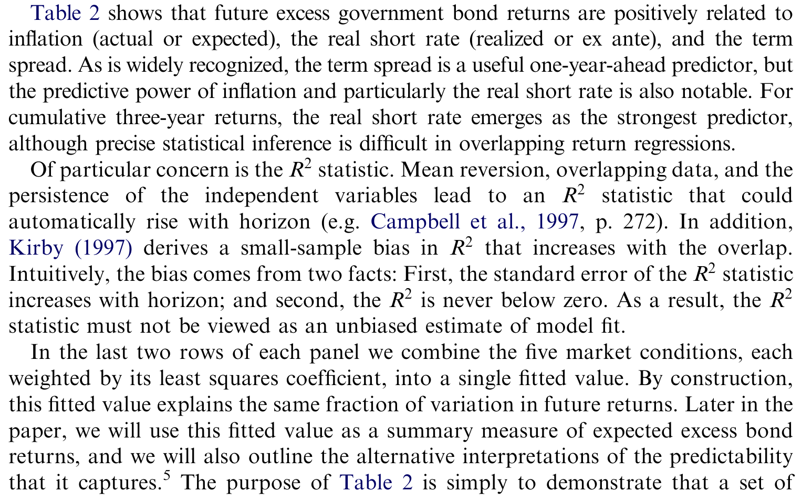
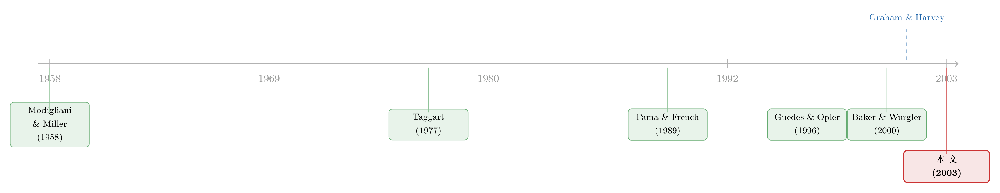

公司发长债的那一刻，已经替你预言了债市的明天
本文读的是 Baker, Greenwood & Wurgler (2003, Journal of Financial Economics)：当美国企业整体上更偏好发长期债时，未来的超额长债收益往往偏低；而这套预测力，几乎完全来自通胀、实际短利率与期限利差这几个老牌的债市状态变量。换句话说，公司「发长还是发短」的集体选择，本身就是一台债券收益的预报器——而它读的，正是 CFO 们自己也在看的那几张表。
1 一个被冷落的问题
先从一个反差讲起。
在公司金融里，股权融资的「择时」早已是显学。Baker 和 Wurgler (2000) 发现，当股权溢价低、未来股票收益注定平庸时，企业反而扎堆增发；Loughran 和 Ritter (1995) 那篇著名的「新股之谜」更是把发行后的长期跑输钉成了一桩公案。于是一个朴素的图景被反复讲述：公司像一个精明的择时者，专挑市场最贵的时候把股票卖给你。（关于这条线，可参见《公司一发证券股价就跌：是老板在「择时」，还是市场在「定价」？》。）
可奇怪的是，债权融资——这个在美国经济里体量远大于股权融资的东西——却几乎没人这样追问过。人们当然知道公司「发债的多少」对利率敏感：Bosworth (1971)、White (1974)、Taggart (1977)、Marsh (1982) 都发现，债务发行量随利率水平起伏。也有人研究过「发债的期限」：Guedes 和 Opler (1996) 用公司层面数据发现，债务发行的久期与期限利差负相关；Barclay 和 Smith (1995)、Stohs 和 Mauer (1996) 在资产负债表的存量数据里看到了同样的负号。
但这些研究都停在了半路上。它们告诉你「公司发长债还是发短债，和当下的利率形状有关」，却从不去看收益数据。于是关键的那一问始终没人回答：公司选择的这个期限，和不同期限上借钱的真实成本——也就是未来的超额债券收益——到底有没有关系？
这正是本文要补上的一块。三位作者把问题问得很干脆：新发债务期限结构的时序变化，是不是和超额长债收益的可预测性绑在一起？ 如果是，那公司就不只是「随利率起舞」，而是在真刀真枪地择时债市。
2 把问题拆成两半
要回答这个问题，作者的思路极其清爽，整篇论文其实就是把一句话拆成两个可检验的环节。
第一环：债市状态变量能不能预测超额债券收益？ 这是前提。如果未来的超额债券收益压根不可预测，那「择时」就无从谈起。
第二环：公司发债的期限，是不是恰好跟着这些状态变量在动？ 如果第一环成立，而公司又偏偏在「未来超额收益低」的时候去发长债，那两者一拼接，结论就出来了：公司倾向于在长债预期收益被压低时去借长钱。
我们一环一环地看。
3 第一环：债市的状态，写在五个变量里
先说测什么。作者用美国 1953–2000 年的年度数据（1952 年前美联储钉住短利率，故学界惯例从 1953 起步）。超额债券收益有两套口径：长期国债减国库券 \((r_{GL}-r_{GS})\)，以及高评级公司债减商业票据 \((r_{CL}-r_{CS})\)；两者相关系数高达 0.95，几乎是同一个故事。
预测变量则是五个老朋友：通胀 \(\pi\)、实际短期利率 \((y_{GS}-\pi)\)、期限利差 \((y_{GL}-y_{GS})\)、信用利差 \((y_{CS}-y_{GS})\)，以及信用期限利差。最核心的预测回归长这样（以一年期超额国债收益为例）：
$$ r_{GLt+1}-r_{GSt+1}=a+b\,\pi_t+c\,(y_{GSt}-\pi_t)+d\,(y_{GLt}-y_{GSt})+e\,(y_{CSt}-y_{GSt})+f\,\big((y_{CLt}-y_{GLt})-(y_{CSt}-y_{GSt})\big)+u_{t+1} $$
所有自变量都被标准化成单位方差，所以系数直接读作「自变量变动一个标准差，收益变动几个百分点」；标准误按 Newey 和 West (1987) 做了三阶的异方差与自相关修正。
结果如表 2 所示。一年期回归里，期限利差的系数是 4.17（t = 3.38）、实际短利率 3.45（t = 3.21），通胀 3.68（t = 1.74）——都是正号：当下这些变量越高，未来超额债券收益越高。期限利差能预测债券收益，这是 Fama 和 French (1989) 以来人尽皆知的事；但作者特别强调，实际短利率的预测力同样不可小觑，而且在三年累计收益里反而成了最强的那一个：累计三年回归中实际短利率系数高达 11.26（t = 5.54），整个回归的 \(R^2\) 做到 0.41。

Table 2: shows that future excess government bond returns are positively related to
这里作者诚实地提醒：累计、重叠的长期收益回归，\(R^2\) 会随预测期机械地虚高（Kirby, 1997 推导过这种小样本偏误），所以那个 0.41 不能当成无偏的拟合优度来读。但它至少说明：债市状态变量能解释的超额收益变动，是「不可忽略」的那一档。
为了后面好用，作者还把这五个变量按各自的最小二乘系数加权，压成一个单一的拟合值——可以理解为「债市状态浓缩成的一个预期收益指标」。这个动作不只是为了好看：它顺手化解了 Stambaugh (1999) 担心的那种「自相关预测变量导致系数有偏」的问题，因为拟合值的新息与长利率的新息在统计上几乎不相关。
4 第二环：公司的期限选择，跟着同一拍子在动
现在轮到主角——债务期限。
作者用美联储资金流量表（Flow of Funds）构造一个长期债份额变量。直觉是：每年公司都要对「这一笔该借长还是借短」做决策，而当年的新增短债、到期长债、以及债务净增量加总，就构成了这个决策的分母。具体地，长期份额定义为
$$ S_t=\frac{d_{Lt}}{d_{Lt}+d_{St}} $$
其中长债新发量近似为「长债存量变化加上滞后长债存量的十分之一」（假设长债平均十年到期），短债则视同每年全部翻新。这个份额 \(S_t\) 均值约 21.78%，标准差 3.98，本身相当平稳（一阶自相关 0.67）。
接着，一个自然的问题是：这个 \(S_t\) 和第一环里那五个状态变量是什么关系？答案是——负相关。当通胀、实际短利率、期限利差都偏高（也就是未来超额长债收益被预测得偏高）时，长期份额反而偏低。
两环一拼，结论就水落石出了：那五个变量预测「未来长债超额收益高」的时候，公司恰恰在少发长债、多发短债。 反过来说，公司发长债发得最起劲的年份，正是长债未来注定要跑输的年份。
为了把话说得更直白，作者干脆把长期份额本身当成一个单变量预测器直接去预测收益——它确实是个好用的预报器，而且符号正合预期：份额高时，未来超额收益低。最有冲击力的一组数字是：
紧随最低四分位长期份额之后的三年，累计超额国债收益平均高达
21.8个百分点；而紧随最高四分位份额之后，这一数字是−5.2个百分点。
二十几个百分点的落差，全凭一个「公司今年偏爱发长还是发短」的集体信号就分出来了。这不是统计上的纤毫之差，而是肉眼可见的鸿沟。
更妙的是 Compustat 的拆分：这套模式在大公司、老公司、付息公司、投资级公司里最强。也就是说，越是有能力、有动机去盯着债市做财务决策的企业，越像在择时。
5 那么，这到底是不是「择时」？
走到这里，识别上最棘手的那一关来了。
「公司在长债预期收益低时少发长债」这个相关性，至少有两种讲法。一种是债市择时：管理层主动利用了一个无效或分割的市场，想以最低成本锁定期限。另一种是理性故事：最优债务期限和理性的预期收益本就同时随时间变动，二者的负相关只是两个内生变量的共舞，并不意味着谁占了谁的便宜。
作者很坦白：在「联合假设问题」面前，没人能彻底证明市场无效。但他们摆出了三条逐渐加码的证据，把天平推向择时这一边。
其一，找不到该有的风险补偿。 用 Schwert (1989) 的办法，他们无法把长期份额和任何「理应索取理性风险溢价」的风险联系起来。
其二，理论上也讲不通。 把最优期限结构的理论翻一遍（Brick 和 Ravid, 1985；Diamond, 1991 等），找不到任何直截了当的理由，能解释为什么「最优债务期限」会和「理性的预期超额债券收益」反向变动。
其三，也是最有说服力的一条——CFO 自己招了。 Graham 和 Harvey (2001) 那份著名的问卷里，大量首席财务官明确表示，他们偏好短债是因为「短期利率相对长期利率较低时」以及「在等待长期利率下行时」。这几乎是把「我在择时」四个字写在了脸上。而且，说这话的，恰恰是 Compustat 检验里那批对债市最敏感的公司。值得一提的是，问卷里只有 9% 的经理说「因为预期自家评级会改善才借短债」——可见他们盯的是公开的债市大势，而非私有的信用信息。
至于和 Kaplin 和 Levy (2001) 的关系，作者也讲得清楚：对方用类似变量在一到六个月的高频上做预测，而本文的相对优势是近五十年的长样本与最长三年的预测期。对一个想靠择时省钱的管理层来说，重要的是债券存续期内的累计成本，而不是几个月的短跑——所以长预测期才真正切题。
（顺带一提，本文讲的是「集体层面、跟着利率走」的期限择时；近年有文献把镜头拉到更微观的动机上，比如《威胁还没来，债先「续」上了——航空公司如何为一场尚未发生的价格战提前锁定长债》，以及《晴天才借得起伞：谁在用「提前续贷」对冲信用寒冬》，可以和本文的宏观视角互相对照。）
6 文献脉络
把这条线索从头捋一遍，会看到一个很有意思的「迁移」。
起点当然是 Modigliani 和 Miller (1958)：在完美市场里，财务政策动不了资本成本，长短债之间的替换没有任何油水。整篇论文其实就是在为这个无关性命题寻找裂缝。 接着，Taggart (1977) 这一脉发现，债务发行量对利率敏感——但只看「量」，不看「价」。Guedes 和 Opler (1996) 把视线移到「期限」，发现久期与期限利差负相关——但仍不看收益。
另一条平行的线，是债券收益可预测性：Fama (1984)、Fama 和 Bliss (1987)、Fama 和 French (1989) 一路把期限利差、商业周期变量确立为超额债券收益的预报器。
而真正点燃这篇论文的，是 Baker 和 Wurgler (2000) 在股权一侧的发现——股权发行份额能预测股票收益。本文做的，正是把这把「发行份额 → 收益可预测性」的钥匙，从股权一侧搬到债权一侧、从「股 vs 债」搬到「长债 vs 短债」。最后，Graham 和 Harvey (2001) 的问卷为这套解释钉上了行为学的注脚。本文 (2003) 就坐落在这几条线的交汇处。

7 评论与延伸（Q&A + 研究方向）
(a) 几个可能的疑问
Q：长期份额预测收益，会不会只是把「期限利差预测收益」换了个马甲？
一半对，一半不对。作者的核心发现恰恰是：长期份额的预测力，大部分确实来自它和那五个状态变量（尤其期限利差、实际短利率）的关联——这正是论文要论证的「第二环」。但关键在于，份额是公司主动选择的结果，它把「市场状态」翻译成了「企业行为」。所以它不是冗余，而是证据：证明公司确实在按这些状态变量调期限。
Q：那个「最低四分位后三年 +21.8%」会不会是重叠样本制造的幻觉？
这是最该警惕的地方。三年累计、年度重叠，样本独立性很差，\(R^2\) 也会机械虚高。作者用 Newey-West、并交叉验证了 Hansen-Hodrick (1980) 与 Hodrick (1992) 的修正，称基本推断不变；但他们也明说，超出三年就没有足够的非重叠样本做可信推断了。所以这个数字的「方向」可信，「精度」要打折。
Q：为什么强调实际短利率，而不是大家熟悉的期限利差？
因为在长期累计收益上，实际短利率反而是最强的预测器（三年累计 t = 5.54）。期限利差是经典的一年期预报器，但本文的卖点之一，就是把实际短利率和通胀这两个常被忽视的分量也拉进来——而这恰好和 CFO 问卷里「短利率相对低时借短」的说法对上了号。
Q：这能证明市场无效、公司真省到了钱吗？
不能，作者自己也不敢下这个结论。检验市场有效性永远绕不开「联合假设问题」。他们能说的是：找不到对应的风险补偿、理论上讲不通反向关系、且 CFO 亲口承认在择时——三条合起来，让「择时」比「理性共舞」更可信，但不是铁证。
Q：用资金流量表加总数据，会不会把公司间的差异全抹平了？
会，这正是作者补做 Compustat 的原因。加总数据看不到横截面差异，而 Compustat 拆分揭示：大、老、付息、投资级公司的择时模式最强。这反过来支撑了择时解释——越有能力盯盘的公司越像在择时。
Q：长期份额是「构造」出来的（假设长债十年到期、短债全翻新），稳健吗？
这是个真实的测量隐忧。长债新发量靠「存量变化 + 1/10 滞后存量」近似，短债则假设全部翻新，都带着结构假设。好在结果对用实际通胀还是期望通胀、样本是否回溯到 1945 年都不敏感，稳健性尚可；但份额构造本身的敏感性，仍是后人想复制时要小心的地方。
(b) 几个可能的研究问题与提案
1. 把「期限择时」搬到公司债流动性上。 【经济故事】本文盯的是利率层面的择时；但公司发长债的集体潮汐，会不会也择中（或制造）了二级市场流动性的高低点？发行扎堆时，新券供给冲击可能压低流动性、抬高利差。 【可行性】中。需要 TRACE 成交数据 + Mergent FISD 发行明细，用发行量的行业/期限聚合作为供给冲击，识别可借鉴央行购债类的自然实验。数据齐备，难在把「择时」与「供给挤压」分开。
2. 外资持有人会不会改变企业的期限择时？ 【经济故事】当一国公司债越来越多被外资持有，其期限择时的有效性与动机可能改变——外资对本地利率信号的解读不同，可能削弱或放大份额的预测力。 【可行性】中偏低。需跨国发行数据 + 外资持债份额（如 TIC、各国央行托管数据），识别上可用资本账户开放的时点做差分。数据拼接成本高，但方向新颖。
3. 用本文的份额变量去预测信用利差，而不只是超额收益。 【经济故事】如果公司在「长债便宜」时多发长债，那这种集体行为是否预告了未来信用利差的走向？把择时信号从无风险期限结构推广到信用维度。 【可行性】高。Flow of Funds 份额 + Moody's Baa/Aaa 利差都是现成长序列，回归框架几乎可以照搬本文，是一个低成本的直接延伸。
4. 期限择时在零利率/量化宽松年代是否失效？ 【经济故事】本文样本止于 2000 年。2008 年后短利率长期贴地、期限利差被 QE 人为压平，CFO 赖以择时的那几个信号还灵不灵？ 【可行性】高。把样本延长到 2024 年，做子样本对比即可，识别上注意 QE 时期利率变量的内生性。一个干净、可立刻动手的复制+扩展题。
8 参考文献
Baker, M., Wurgler, J. (2000). The equity share in new issues and aggregate stock returns. Journal of Finance 55, 2219–2257.
Baker, M., Wurgler, J. (2002). Market timing and capital structure. Journal of Finance 57, 1–32.
Barclay, M., Smith, C. (1995). The maturity structure of corporate debt. Journal of Finance 50, 609–631.
Fama, E. (1984). The information in the term structure. Journal of Financial Economics 13, 509–528.
Fama, E., French, K. (1989). Business conditions and expected returns on stocks and bonds. Journal of Financial Economics 25, 23–49.
Graham, J., Harvey, C. (2001). The theory and practice of corporate finance: evidence from the field. Journal of Financial Economics 60, 187–243.
Guedes, J., Opler, T. (1996). The determinants of the maturity of corporate debt issues. Journal of Finance 51, 1809–1833.
Kirby, C. (1997). Measuring the predictable variation in stock and bond returns. Review of Financial Studies 10, 579–630.
Loughran, T., Ritter, J. (1995). The new issues puzzle. Journal of Finance 50, 23–51.
Modigliani, F., Miller, M. (1958). The cost of capital, corporation finance, and the theory of investment. American Economic Review 48, 655–669.
Newey, W., West, K. (1987). A simple, positive semi-definite, heteroskedasticity and autocorrelation consistent covariance matrix. Econometrica 55, 703–708.
Stambaugh, R. (1999). Predictive regressions. Journal of Financial Economics 54, 375–421.
Taggart, R. (1977). A model of corporate financing decisions. Journal of Finance 32, 1467–1484.